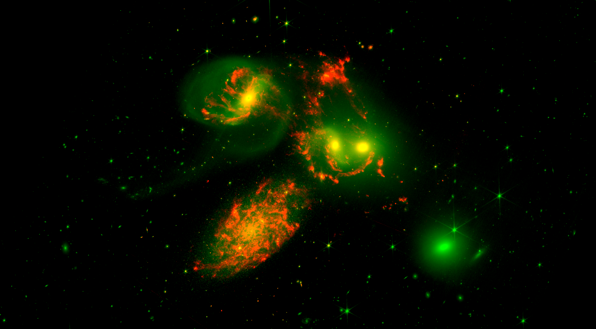
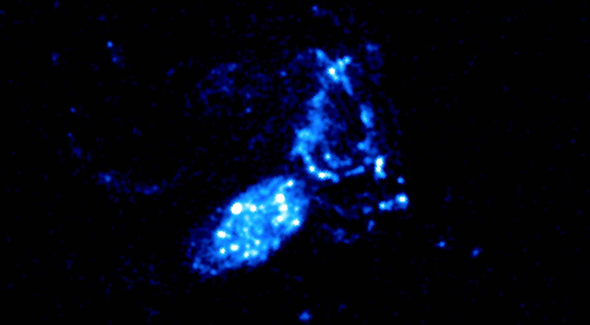

<script
  defer
  src="https://unpkg.com/img-comparison-slider@7/dist/index.js"
></script>
<link
  rel="stylesheet"
  href="https://unpkg.com/img-comparison-slider@7/dist/styles.css"
/>

<style>
  .before,
  .after {
    margin: 0;
  }

  .before figcaption,
  .after figcaption {
    background: #fff;
    border: 1px solid #c0c0c0;
    border-radius: 12px;
    color: #2e3452;
    opacity: 0.8;
    padding: 12px;
    position: absolute;
    top: 50%;
    transform: translateY(-50%);
    line-height: 100%;
  }

  .before figcaption {
    left: 12px;
  }

  .after figcaption {
    right: 12px;
  }
</style>


  <figure slot="first" class="before">
      
      <figcaption>JWST</figcaption>
  </figure>
  <figure slot="second" class="after">
    
    <figcaption>UVIT</figcaption>
  </figure>
</img-comparison-slider>
